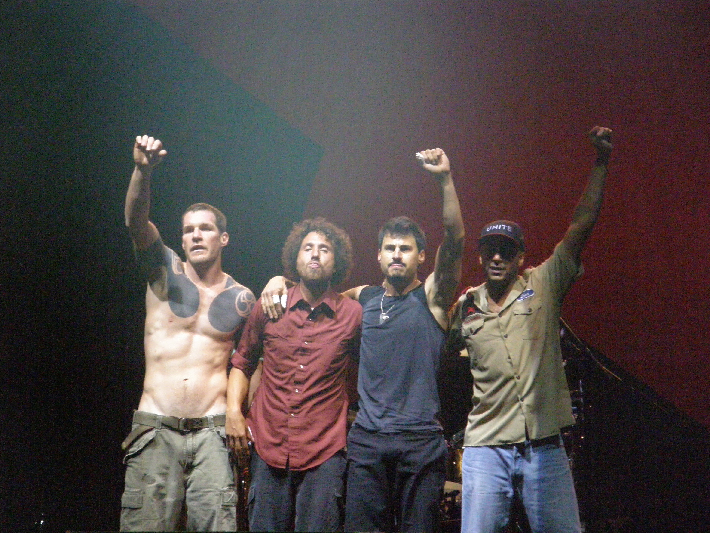

Rage Against the Machine
Rage Against the Machine (también conocido como
Rage o RATM)
fue una banda estadounidense de metal fundada en el año 1991 por
Tom Morello y Zack de la Rocha. Éstos junto con Tim Commerford y Brad
Wilk conforman la banda. El grupo tuvo numerosos problemas entre sus
integrantes, hasta que después del lanzamiento del álbum
'The Battle of Los Angeles', en el año 2000, Zack de la Rocha decide
abandonar la banda para dedicarse a la música como solista. La banda
se disolvió completamente trás la salida del álbum siguiente,
'Renegades'. RATM es única en su manera de combinar el rap, metal,
y el discurso político anti-capitalista/neoliberal, que convierten
sus canciones en verdaderos discursos políticos. La banda a hecho
reencuentros y se han juntado para ir de gira por diferentes
partes del mundo, como Australia, Las Vegas y, cuando visitó Chile,
Sudamérica, en el año 2010.

Integrantes
| Nombre |
Rol |
| Zack de la Rocha |
Vocalista |
| Tim Commerford |
Bajista |
| Tom Morello |
Guitarra |
| Brad Wilk |
Baterista |
Ultima Informacion
| Ultimos discos |
Ultimos conciertos |
|
Renegades (2000)
The Battle of Los Angeles (1999)
Evil Empire (1996)
|
South America Tour (2010)
Australian Tour (2008)
Vegoose Festival (26-28/10/2007)
|